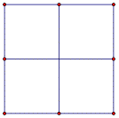
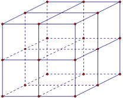

|
| 1) Consider a segment. What is the dimension of the segment? |
a) Separate the segment by a factor of 1/2. How many parts are there now? |
b) Separate the segment by a factor of 1/3. How many parts are there now? |
c) How many parts are there with scale factors of 1/4, 1/5, 1/6? |
d) What do you notice about the relationship between the scale factor and the number
of pieces? |
|
|  |
| 2) Consider a square. What is the dimension of the square? |
a) Separate the square’s sides by a factor of 1/2 and connect opposite sides. How many
parts are there now? |
b) Separate the square’s sides by a factor of 1/3. How many parts are there now? |
c) How many parts are there with scale factors of 1/4, 1/5, 1/6? |
d) What do you notice about the relationship between the scale factor and the number of pieces? |
|
|  |
| 3) Consider a cube. What is the dimension of the cube? |
a) Separate the cube by a factor of 1/2 (remember to do each side and connect opposite sides).
How many parts are there now? |
b) Separate the cube by a factor of 1/3. How many parts are there now? |
c) How many parts are there with scale factors of 1/4, 1/5, 1/6? |
d) What do you notice about the relationship between the scale factor and the number of pieces? |
|
| Do you see any relationships between the dimension, number of pieces and scale factor? |